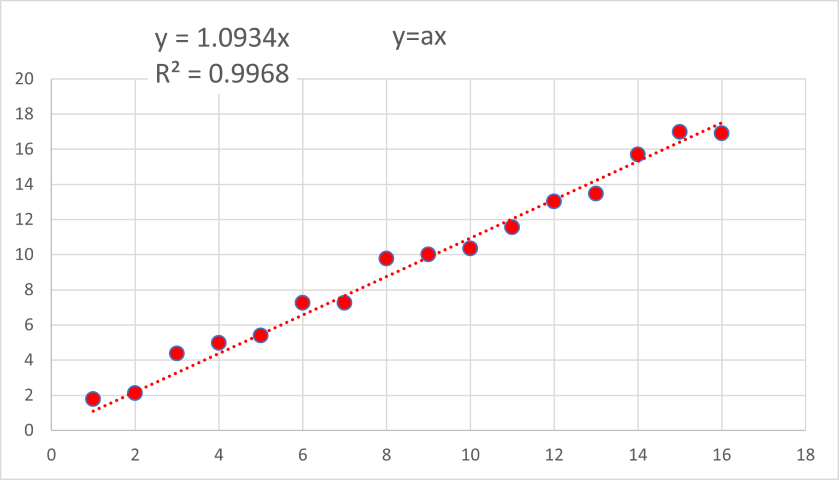
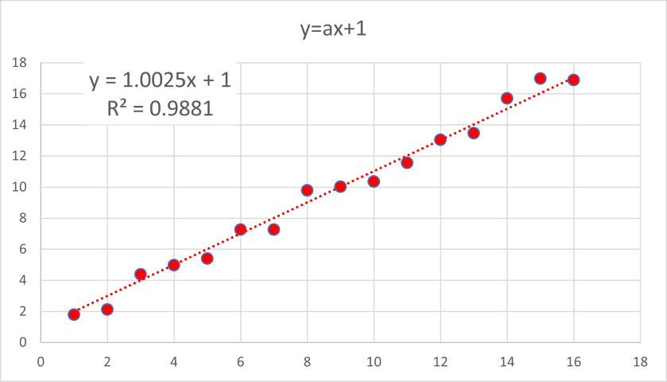

エクセルでの近似 - R二乗値の求め方 - 02
次には，
・基本の直線近似（切片なし）
\( \Large \displaystyle y=ax \)
で．
a = 1
でランダム関数によりばらつきを与えています．

\( \Large \displaystyle R^2=\color{red}{0.9968} \)
相関係数は，
\( \Large Cov = \frac{\displaystyle \sum_{i=1}^n (x_i - \overline{x})(y_i - \overline{y}) }{\sqrt{\displaystyle \sum_{i=1}^n (x_i - \overline{x} )^2} \sqrt{\displaystyle \sum_{i=1}^n (y_i - \overline{y} )^2} } = 0.9940\)
\( \Large Cov^2 = \color{blue}{ 0.9881} \)
となり，一致しません．
決定係数，R12，は，
\( \Large R_1^2 = 1 - \frac{\displaystyle \sum_{i=1}^n (y_i - \overline{y})^2 }{\displaystyle \sum_{i=1}^n (y_i - \overline{y} )^2} = \color{blue}{0.9843} \)
となり，一致しません．
しかし，決定係数，R72，は，
\( \Large R_7^2 = 1 - \frac{\displaystyle \sum_{i=1}^n (y_i - \overline{y})^2 }{\displaystyle \sum_{i=1}^n y_i -^2} = \color{red}{0.9968} \)
となり，直線近似（切片あり)は，決定係数，R72，を示すものと思われます．
次に，
・基本の直線近似（切片固定）
場合はどうなるのでしょう？

\( \Large \displaystyle R^2=0.9881 \)
相関係数は，
\( \Large Cov = \frac{\displaystyle \sum_{i=1}^n (x_i - \overline{x})(y_i - \overline{y}) }{\sqrt{\displaystyle \sum_{i=1}^n (x_i - \overline{x} )^2} \sqrt{\displaystyle \sum_{i=1}^n (y_i - \overline{y} )^2} } = 0.9940\)
となり，
\( \Large Cov^2 = \color{red}{0.9881} \)
となり，一致します．
決定係数，R12，は，
\( \Large R_1^2 = 1 - \frac{\displaystyle \sum_{i=1}^n (y_i - \overline{y})^2 }{\displaystyle \sum_{i=1}^n (y_i - \overline{y} )^2} = \color{red}{0.9881} \)
となり，直線近似（切片固定)は，決定係数，R12，を示すものと思われます．
・理由
なぜ，切片のあるなしで計算方法が違うのか，この違いについては，いろいろなサイトに載っていますが，
自体にも記載があります，バージョンによって異なるようです（今回検証したのは365）．
どうも別のソフト（検証したのは，R）も同様の計算方法のようです．
なぜか，という点については，ここ，に説明がありましたが，私の読解力では読み解けませんでした（計算式に，二乗，が入っていないのはなぜだろう？）
こちらのサイト，にも記載がありましたが，なぜか，についての記載はないようです．
今のところ，私の理解力では，そういうものなのだ，というように理解していくしかなさそうです．
次は，直線近似における各パラメータの推定誤差，です．